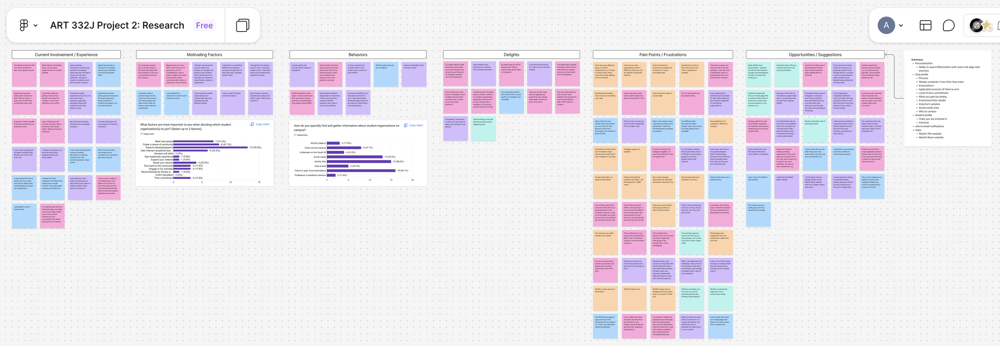
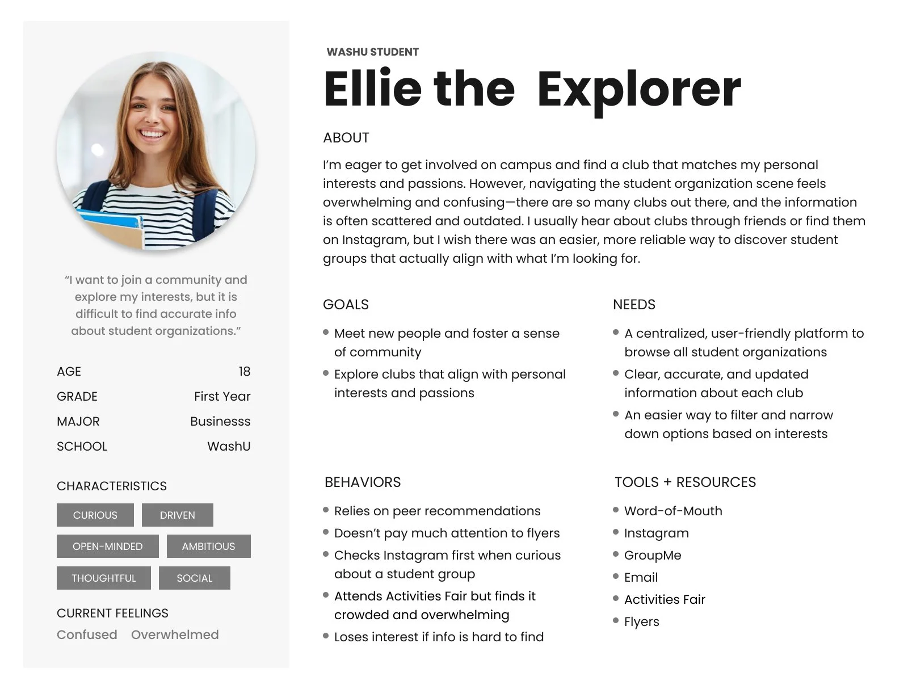
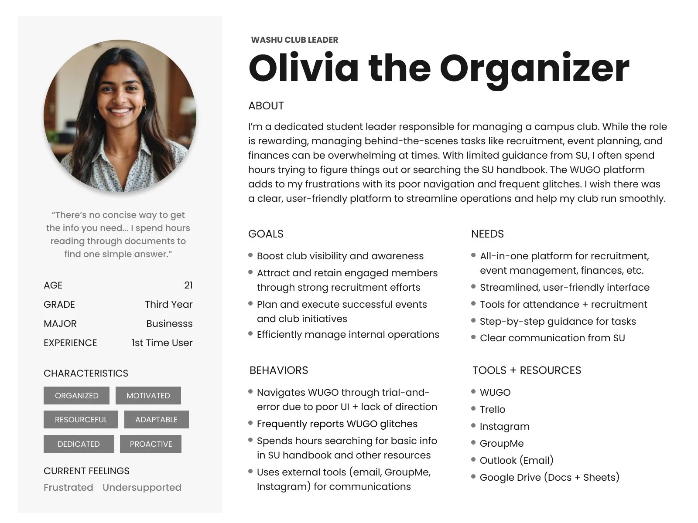
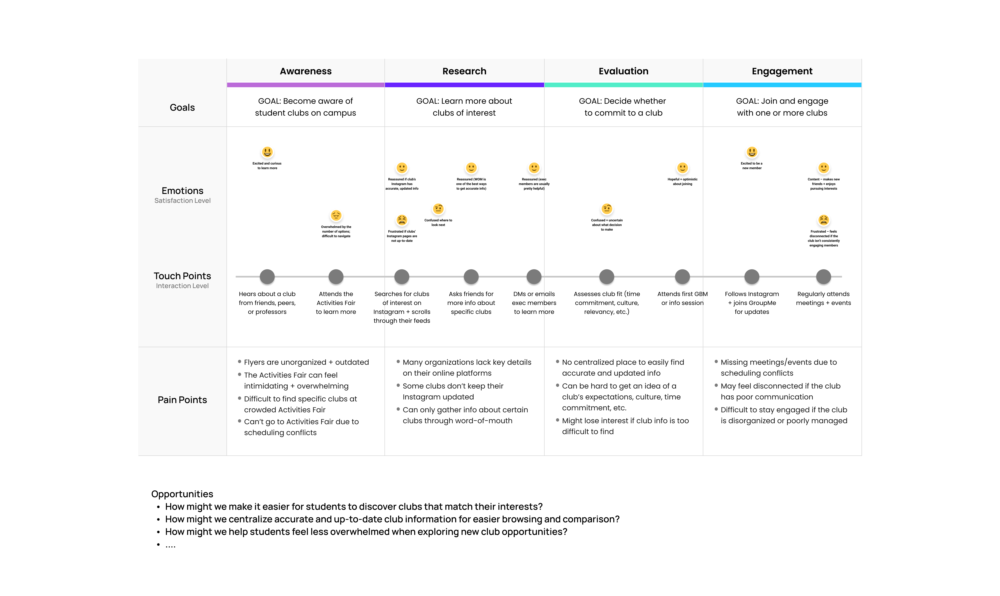
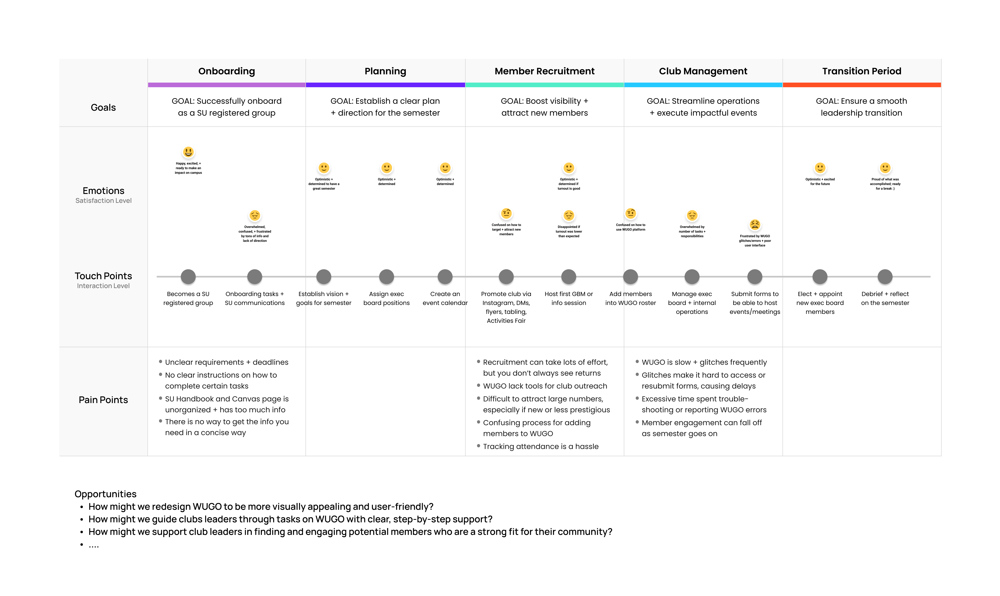

Problem
Fragmented discovery leads to missed connections.
WashU has hundreds of amazing student organizations, but actually finding the right group can be a frustrating experience. Club info is scattered across random group chats, social media accounts, and campus flyers. While WashU does have an official platform called WUGO, students find it slow, visually dated, cluttered with unhelpful info, and difficult to navigate.
Research
Uncovering the friction on both sides.
I set out to understand the hurdles students face when finding and joining clubs, as well as the administrative headaches club leaders run into when recruiting and onboarding new members.
To get the full picture, I used a mixed-methods approach:
- Quantitative Surveys: Gathered data on discovery habits, what students prioritize most in a club, and challenges they face during their search.
- Qualitative Interviews: Sat down with 3 undergrad students and 3 club leaders to uncover common pain points, frustrations, workflow bottlenecks, and opportunities to improve the experience.
Insights
From sticky notes to real insights.
To make sense of all the data, I organized survey results and interview feedback into key themes such as current experiences, motivations, behaviors, delights, pain points, and opportunities.

After clustering research findings, I built dedicated personas and journey maps for both students and club leaders, allowing me to visualize the end-to-end experience and uncover critical friction points.




The big takeaways:
One Central Hub
Students want a single, reliable place that brings scattered club info, announcements, and leadership contacts all into one place.
Smarter Discovery
Students want intuitive, interest-based filters and tailored recommendations to find campus clubs that align with what they care about.
Personal Dashboard
Students want a personal home base to manage their profile, customize their interests, and easily track current club involvements.
No More Guesswork
Students want transparent club profiles with key info like weekly time commitments, meeting schedules, and expectations before joining.
Prototype
A better way to connect: simple, centralized, and personalized.
I built a mid-fidelity Figma prototype focused on streamlined discovery and clear club profiles.
Feature 01 — Smart Explore Page
Features a "Recommended for You" section at the top based on student interests, paired with dynamic filters for category, school, and commitment level so students can browse without being overwhelmed.
Feature 02 — Student Dashboard
A personal home base to manage your profile, customize interests for better recommendations, and keep track of all your active club memberships.
Feature 03 — Standardized Club Profiles
Clean, standardized layouts that showcase the club's mission, upcoming events, expectations, time commitments, photo galleries, and leadership contact info at a glance.
Testing
Validating the solution through usability testing.
To evaluate the user experience, I ran usability testing sessions with student participants.
Task 1: Adding an Interest
Completed relatively smoothly, with minor confusion around clickable category headers.
Task 2: Applying a Filter
Users struggled to see or find the filters and often clicked on the search bar instead.
Task 3: Learning to Join a Club
No major challenges finding club info, but contrast and readability could be improved.
Next Steps
Refining the experience for implementation.
Feedback from testing highlighted clear areas to polish as the design moves toward implementation:
Priority 01 — Fix Usability Issues
Increase filter visibility, darken text contrast, and make interest categories clearer.
Priority 02 — Expand Feature Scope
Build out messaging center, event pages, and the club executive admin dashboard.
Priority 03 — Establish High-Fidelity Visual Identity
Integrate official WashU branding, color palettes, and typography for a cohesive visual identity.